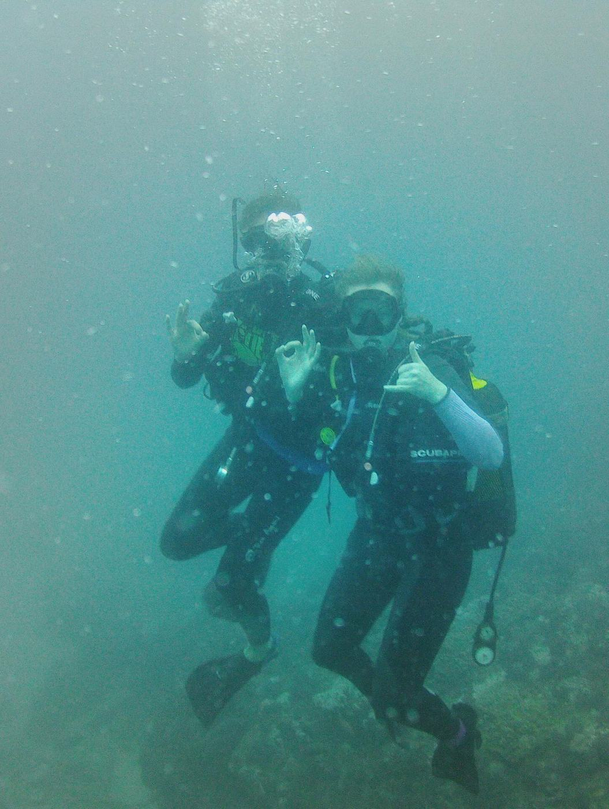

The Feature · Biodiversity & Ecology
Into the field

I’m a biology student at the University of Göttingen. Over the past year I’ve worked on coral reefs and in rainforest on three continents. This is what I did there, and the kind of field ecologist I want to become.
Göttingen, October 2026
My first semester as a biology student began in October 2026. I’m studying for a B.Sc. in Biological Diversity and Ecology (Biologische Diversität und Ökologie) at the University of Göttingen, a programme built around applied biodiversity research, ecology, and evolution and systematics.
What I want to do with it is long-term ecological field work: conservation, biodiversity monitoring, reef and rainforest ecology. The kind of work where you go back to the same reef or the same stretch of forest, use the same method, and count again. That is how change shows up in the data.
I didn’t come to biology straight from school. I spent about five years in business first, and the end of this story is about what that gives me. But in 2025 I joined my local BUND group, learned to dive, and went to see conservation work up close: on an Indian Ocean reef, in the Peruvian Amazon and in a Caribbean coral nursery. Those months made the decision for me.
The route
Three continents in eight months
Between October 2025 and May 2026 I joined field programmes in South Africa, Peru and Honduras. In Germany I volunteered with BUND on the Lower Rhine. Now I study in Göttingen.
- IIISodwana Bay, South Africa20 Oct – 3 Nov 2025
- IIMadre de Dios, Peru16 Mar – 25 Apr 2026
- IUtila, Honduras4 – 30 May 2026
- IVNeukirchen-Vluyn/Moers, GermanyJun – Dec 2025
- Göttingen, GermanySince Oct 2026
- AustraliaWork & Travel · 2026

Chapter I · Utila, Honduras
The nursery and the reef
Whale shark, Utila, Bay Islands. Photo: Celine Willemsen
My most recent stint was a marine conservation internship with the Whale Shark & Oceanic Research Center on Utila, one of Honduras’s Bay Islands. For four weeks in May 2026, most of my work was about helping a reef recover.
A lot of it centred on the coral nursery: caring for fragments, monitoring the ones already out-planted on the reef, and checking for new coral recruits. I also helped treat corals affected by stony coral tissue loss disease (SCTLD), which has been spreading across Caribbean reefs.
The rest of the time I was counting and identifying: REEF fish surveys, coral ID, reef-associated organisms, megafauna monitoring. Lionfish are invasive in the Caribbean, so we removed them on dives and dissected them afterwards. Back on shore, I helped with mangrove reforestation.


Chapter II · Madre de Dios, Peru
Under the canopy
Caiman and mammal monitoring, reserve patrols and reforestation in the Peruvian Amazon.

Before Utila, I spent March and April 2026 at Panthera Sanctuary in the Peruvian Amazon, near Puerto Maldonado in the Madre de Dios region, on its Amazon Conservation & Reforestation programme.
The monitoring work covered caiman and mammals, alongside bird watching and herpetology. I joined reserve patrols and expeditions into the rainforest, and I learned that much of field work is simply keeping things running: maintaining trails and helping with construction.
The other half of the work was about putting forest back. We planted for reforestation, and I learned the basics of agroforestry and neotropical permaculture: growing food and trees together.



Chapter III · Sodwana Bay, South Africa
Learning to read a reef
Two weeks in Sodwana Bay, on South Africa’s Indian Ocean coast, in October and November 2025. I joined Wildlife & Ecological Investments (WEI), which runs research programmes with Operation Wallacea, for its Marine Conservation & Indian Ocean Reef Ecology course.
This is where I learned the basics of reef ecology and survey techniques. That same October, I qualified as a PADI Open Water Diver.

Chapter IV · Neukirchen-Vluyn, Germany
Starting close to home
Conservation doesn’t only happen in faraway places. From June to December 2025 I was a member of the BUND local group in Neukirchen-Vluyn/Moers, part of Friends of the Earth Germany. It was a way to get involved close to home while I was still working in finance.


Postscript Work & Travel, Australia · 2026
Sidebar
By the numbers
- 3
- continents in 8 monthsSouth Africa, Peru and Honduras, Oct 2025 – May 2026
- 3
- field programmes abroadSodwana Bay, Madre de Dios and Utila
- 4
- dive & first-aid certificationsPADI Open Water, Advanced Open Water, Rescue Diver, plus EFR
- 5
- years in financial accountingIndustrial clerk at LEMKEN, Feb 2021 – Feb 2026
- 2
- working languagesGerman (native) and English (C1)
- 1
- goalLong-term ecological field work
Credentials
Going deeper
Reef work starts with being safe in the water. Between October 2025 and July 2026 I went from Open Water to Rescue Diver, with Emergency First Response training on top.
- Oct 2025 · PADI Open Water Diver The same month as the reef course at Sodwana Bay.
- May 2026 · PADI Advanced Open Water Diver The same month as the internship on Utila.
- Jul 2026 · PADI Rescue Diver With EFR, Emergency First Response.
Also certified
- Cambridge C1 Advanced (CEFR C1)Dec 2025
- PRINCE2 Agile Foundation (PeopleCert)Aug 2025
- Driving licence, class B
Studies
Back to university
-
2026 –
Now
B.Sc. Biologische Diversität und Ökologie
Biological Diversity & Ecology
Georg-August-Universität Göttingen · from winter semester 2026/27
-
2018 – 2023
B.A. Business Administration
FOM University of Applied Sciences · Sep 2018 – Jan 2023
Before biology · What I bring
From the ledger to the field
Before biology I spent about five years in business. I trained as an industrial clerk at LEMKEN, the agricultural machinery maker in Alpen, then worked in financial accounting in its Financial Services & Tax group until February 2026. Alongside, I completed a B.A. in Business Administration at FOM.
Field projects run on more than field days. Someone has to coordinate the plan, keep the budget straight, manage the contracts and help write the funding application. That was my work at LEMKEN, including the finance sub-project of an SAP S/4HANA rollout.
I also worked as a freelance copywriter from late 2023 to early 2025. It taught me to write clearly for busy readers, which helps with grant applications and with explaining conservation to the public.
- Feb 2021 – Feb 2026Industrial clerk, Financial Accounting LEMKEN GmbH & Co. KG, Alpen · Financial Services & Tax
- Nov 2023 – Jan 2025Freelance copywriter Trained through a Copywriting MBA programme, Oct 2023 – Oct 2024
- Sep 2018 – Jan 2021Apprenticeship, industrial clerk LEMKEN, Alpen
Contributor
Celine Willemsen
Celine Willemsen is a biology student at the University of Göttingen and an aspiring field ecologist. She has worked in coral restoration in Honduras, rainforest conservation in Peru and reef ecology in South Africa, and is a PADI Rescue Diver.
Get in touch
If you run a field project, a monitoring programme or a research station and could use a careful, organised pair of hands, I’d like to hear from you.
celinewillemsen